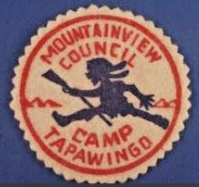

|
 |
Camp Tapawingofrom 1922 till 1986 |
|
Outings of Two-Week Periods to Be Held on Payette A well and pump were installed to insure pure drinking water. The camp is a wooded tract of approximately 10 acres bordering on the north fork of the Payette river and lies at the foot of forest covered mountains rising to the westward. Transportation is furnished by state highway department trucks, which will leave from the Central school building at 6:00a.m. of the first day of each period. From July 17 to August 15, 1922, 78 scouts and officers participated in the Scout camp at Smith's Ferry on the Payette river. The total expense for a two weeks' outing at this camp was $7.50 per scout, including tent lodging, good meals and opportunities for hiking, swimming, boating. Instruction in first aid, woodcraft and other scouting subjects and participation in campfire rallies and other good times, enjoyed by the scouts and their leaders. In 1925 the camp was moved upstream to a new location. A large dining hall and kitchen were also added to the camp. In 1928 prizes were offered to rename the camp to a name that could be more easily pronounced. Nothing came of that proposal. In 1932 the Smith's Ferry camp was moved when the highway was constructed through that area. Preceding the construction of this road, the Boise Area Council made extensive investigation of available places, not only in the Payette lakes region, but also in Stanley Basin. The camp was held on the provisional troop camping basis on the southeastern shore of Payette Lake about 2.5 miles south of the final site. The final site was first used in 1933 under permission of the state land department. The council incorporated in 1934 and began the purchase from the land board and private parties. Camp improvements included the construction of a health lodge and equipment building. Also tent frames were built for new tents in which to accommodate scoutmasters and their families. In 1956 a new dining hall was built, the lower level of the two story hall was designed as a boat house to store motor boats, row boats and canoes. The infirmary was moved back and will be used as a personnel office and a warehouse. The old kitchen was moved into the family area for use as a family center. |